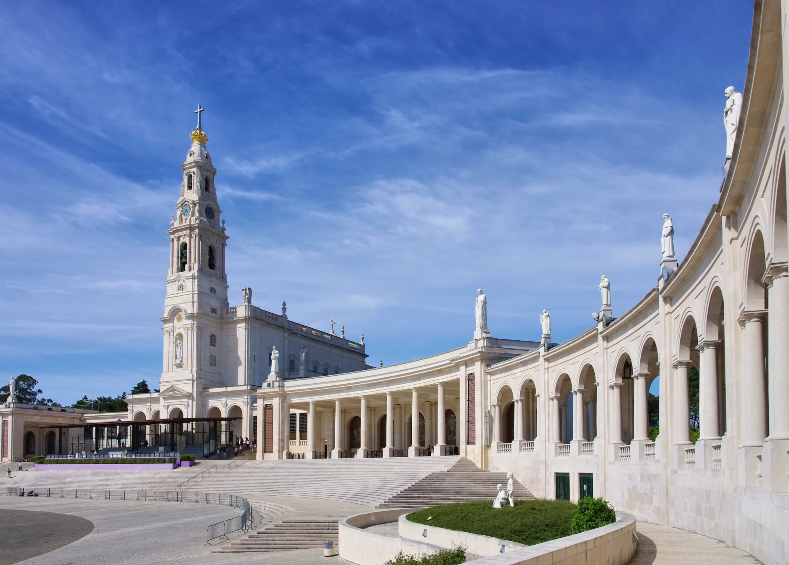

Santuário de Fátima, Fátima.
A Torre de Belém, em Lisboa, é um dos monumentos mais emblemáticos e conhecidos de Portugal. Situada na margem do rio Tejo, a torre não é apenas um ícone arquitetônico, mas também um símbolo de um dos períodos mais significativos da história do país: a Era dos Descobrimentos. Sua história, arquitetura e significado cultural refletem o auge do Império Português e sua influência no mundo durante o século XVI.
História
O Santuário de Fátima foi estabelecido para homenagear as aparições marianas de 1917, quando a Virgem Maria apareceu a três pastores, transmitindo mensagens de oração, conversão e paz. Desde então, o santuário se tornou um dos maiores centros de peregrinação católica no mundo, com milhões de fiéis visitando anualmente, especialmente nas datas de maio e outubro.
Significado Cultural
Fátima é um símbolo de fé e devoção mundial, enfatizando a oração, a penitência e a paz. A mensagem de Fátima exorta os fiéis a orar pelo mundo, especialmente pela conversão dos pecadores. O santuário é um ponto de cura espiritual e unidade religiosa.
Arquitetura
O santuário é composto por diversos edifícios e espaços sagrados:- Basílica de Nossa Senhora do Rosário: Igreja principal com estilo neoclássico, abrigando os túmulos dos videntes.
- Capelinha das Aparições: Local das aparições de 1917, onde está a imagem de Nossa Senhora de Fátima.
- Cruz Alta: Cruz de pedra que se ergue acima do santuário, símbolo de oração e meditação.
- Igreja da Santíssima Trindade: Igreja moderna inaugurada em 2007, projetada para acolher grandes multidões.